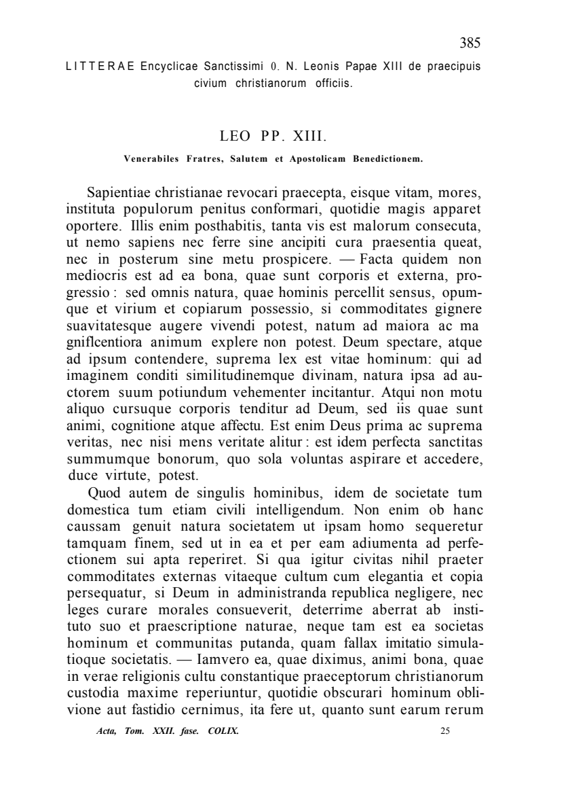
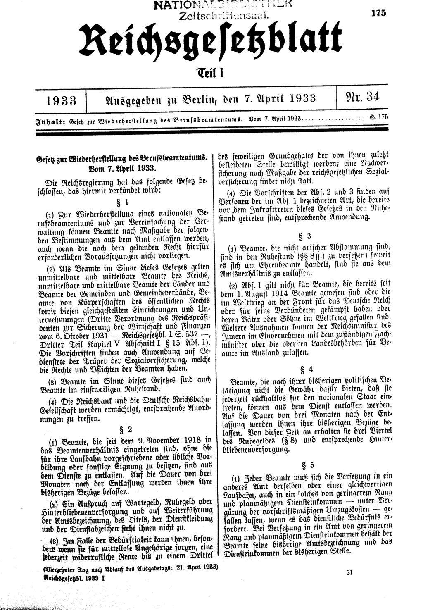
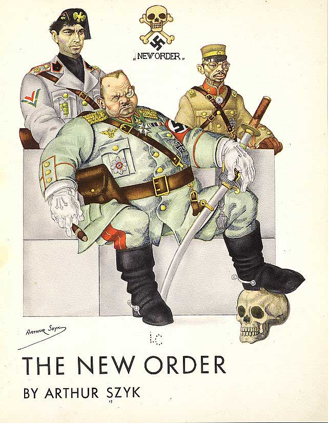

39:15 · 8 OPERE
Possiamo ancora dirci cristiani?
Il filo del discorso
Il relatore riprende il saggio di Benedetto Croce Perché non possiamo non dirci cristiani e si domanda se una eredità culturale possa coincidere con una condotta etica effettiva. Distingue la professione religiosa dall’adesione personale ai valori che attribuisce al messaggio evangelico e discute le contraddizioni storiche nei rapporti fra chiese e potere. L’enciclica Sapientiae christianae di Leone XIII introduce il tema dell’obbedienza e della resistenza a una legge giudicata ingiusta. Il relatore estende questo confronto alle chiusure durante la pandemia e al ruolo della conoscenza come difesa dalle narrazioni dell’autorità: le sue conclusioni sanitarie e giuridiche richiedono però verifiche distinte dall’argomento religioso. La vicenda di una lettera di esclusione di artisti ebrei nel 1933 e le caricature antinaziste di Arthur Szyk servono da esempi della tensione fra legalità e giustizia. Nell’ultima parte vengono commentati titoli giornalistici su trombosi dopo vaccinazione e variante Alpha, insieme a immagini politiche non identificabili compiutamente attraverso la sola trascrizione. La scheda mantiene attribuiti questi giudizi e distingue successione temporale, causalità e rischio sanitario. La chiusura richiama Those Who Remain di G. Michael Hopf: il ciclo fra difficoltà,forza e debolezza delle generazioni è una immagine letteraria, non una regola storica verificata.
I libri nel discorso

Perché non possiamo non dirci «cristiani»
Copertina: Historica, 2022, a cura di Corrado Ocone; ristampa successiva al saggio originale.
Immagine autentica dell’opera, controllata visivamente; l’edizione di riferimento non è attribuita al filmato.
Benedetto Croce, titolo e 1942 espliciti; il testo viene discusso e problematizzato.
Passaggio 0:17 ↗ · Fonti e libro ↗
Sapientiae christianae
Prima pagina: Sapientiae christianae,1890: Prima pagina delle Litterae encyclicae de praecipuis civium christianorum officiis, incipit Sapientiae christianae, 10 gennaio 1890, in Acta Sanctae Sedis 22,1889–1890,pp. 385–404. Riproduzione dalla raccolta ufficiale della Santa Sede, pagina 385.
Pagina intera autentica della raccolta ufficiale, numero 385, intestazione di Leone XIII e incipit latino leggibili. Resa con PDFium senza ritagli o ridisegni. Non è una copertina libraria. Il PDF italiano moderno restituiva una sola pagina con stemma e copyright, priva dell’enciclica: visto e respinto, sostituito da questa riproduzione specifica. L’edizione mostrata nel video non è certificata.
Leone XIII,1890 e passo sull’empietà dell’obbedienza a leggi contrarie alla religione; titolo identificato nel testo ufficiale.
Passaggio 9:10 ↗ · Fonti e libro ↗
Atti degli Apostoli
Volume completo: La Bibbia: San Paolo, 2014 · Nuova Versione dai Testi Antichi · edizione di riferimento La copertina appartiene al volume completo che contiene anche gli Atti, non a una edizione autonoma del libro.
Copertina autentica San Paolo già verificata per la voce Bibbia e riutilizzata con lo stesso SHA-256. Raffigurazione angelica e titolo La Bibbia; la voce distingue il singolo libro dall’intero corpus. Nessuna traduzione viene attribuita al relatore.
Gli Atti sono nominati nella citazione dell’enciclica; formula riconoscibile in 5,29.
Passaggio 10:25 ↗ · Fonti e libro ↗Bibbia
Copertina: San Paolo, 2014 · Nuova Versione dai Testi Antichi · edizione di riferimento
Testo biblico esplicito nel riferimento a letture sugli alieni; non è identificato un libro di commento.
Passaggio 21:40 ↗ · Fonti e libro ↗Vangelo secondo Matteo
Identificazione probabile
Copertina del volume completo: San Paolo, 2014 · Nuova Versione dai Testi Antichi · edizione di riferimento
Vangelo secondo Matteo è un libro della Bibbia. L’immagine mostra il volume completo San Paolo di riferimento, non un’edizione autonoma del singolo libro e non una versione identificata nella citazione.
Cacciata dei mercanti dal Tempio,nei paralleli Matteo 21,12–13, Marco 11, Luca 19 e Giovanni 2; collegamento a Matteo solo probabile.
Passaggio 16:52 ↗ · Fonti e libro ↗
Gesetz zur Wiederherstellung des Berufsbeamtentums (Legge sul ripristino del pubblico impiego professionale)
Documento storico: legge del 7 aprile 1933: Prima pagina del Reichsgesetzblatt, Teil I, n. 34, 7 aprile 1933, p. 175; legge completa allepp. 175–177. Documento storico che introduceva esclusioni razziali e politiche dalla funzione pubblica e le estendeva ad altri dipendenti. Non è normativa attuale.
Facsimile autentico della pagina 175: testata Reichsgesetzblatt,data,numero 34 e titolo della legge leggibili; fonte originale ALEX della Biblioteca Nazionale Austriaca, riproduzione Commons. Non è copertina libraria né immagine della lettera mostrata nel contributo. La legge è identificata indipendentemente, mentre provenienza e destinatari della specifica lettera restano da accertare.
Legge del 7 aprile 1933,paragrafo 3 insieme al 15,espliciti nella descrizione della lettera.
Passaggio 26:05 ↗ · Fonti e libro ↗
The New Order
Identificazione probabile
Frontespizio illustrato: The New Order, 1941: Frontespizio illustrato di The New Order, G. P. Putnam’s Sons, New York, 1941,con caricature apparse sul quotidiano PM. Riproduzione Library of Congress, LC-USZC4-7399. La mostra usa anche l’etichetta publishedcover; il catalogo dell’oggetto lo descrive come titlepage.
Riproduzione autentica della Library of Congress: titolo The New Order,nome Arthur Szyk e caricature dei dirigenti dell’Asse. Non si dichiara che sia la specifica immagine mostrata nel video, né una generica vignetta intercambiabile con ogni opera di Szyk. Il volume 1941 è bibliograficamente certo, il suo collegamento a questo richiamo è probabile. Il titolo potrebbe apparire nelle immagini del contributo, ma non è stato verificato tramite ascolto o revisione audiovisiva umana.
Arthur Szyk, anni Quaranta e nuovo ordine: collegamento probabile alla raccolta The New Order 1941; la singola immagine non è verificata.
Passaggio 28:04 ↗ · Fonti e libro ↗Those Who Remain. A Postapocalyptic Novel
Copertina: Copertina attualmente pubblicata nel sito ufficiale dell’autore per il volume 7 di The New World Series. Romanzo uscito nel 2016; la scheda CreateSpace ISBN 9781539031314 riporta 336 pagine. La specifica veste grafica qui riprodotta non è attribuita automaticamente alla prima tiratura 2016.
Copertina autentica dal sito dell’autore: titolo,sottotitolo,volume 7,nome G. Michael Hopf e gruppo di personaggi con una bambina davanti a un paesaggio urbano. File dichiarato Those who remain 3.jpg nei dati della galleria. La formula è presentata dall’autore come una semplificazione narrativa di una teoria generazionale, non come legge scientifica dimostrata. Il termine postulato usato dal relatore non identifica un autonomo trattato di Hopf.
Michael Hopf,Those Who Remain e 2016 espliciti; seguono quattro proposizioni del ciclo fra tempi difficili e generazioni.
Passaggio 38:32 ↗ · Fonti e libro ↗Minutaggi ricavati da testi automatici, da riascoltare. Le identificazioni probabili sono segnalate accanto ai libri.